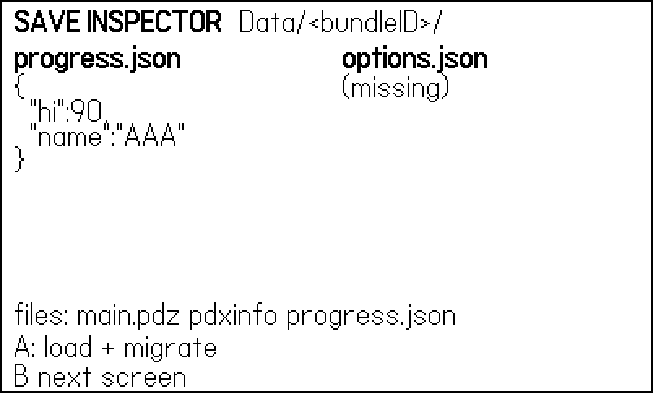
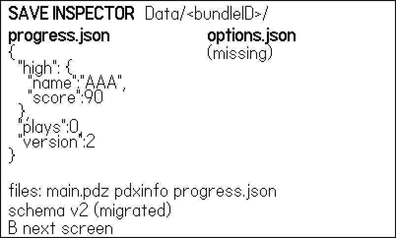
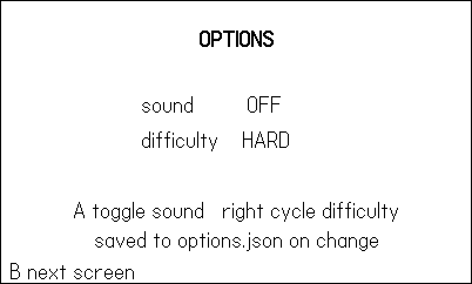
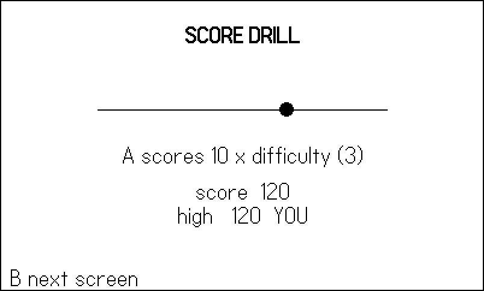

17 Saving and Data
A game that forgets you is a demo. The moment your game has a high score, an options screen, or an unlocked door, it needs persistence — and on the Playdate that means playdate.datastore, a pleasantly tiny API that writes Lua tables to JSON files and reads them back. The API is the easy part. The craft is everything around it: loading saves that don’t exist yet, loading saves written by a version of your game you’ve since rewritten, and keeping a player’s two hundred hours of progress safe from a settings toggle.
This chapter’s example is a miniature game built around watching persistence happen: a save inspector screen that renders the actual JSON on disk, an options screen writing to its own store, a score drill that persists a high score — and, staged at boot, an old-format save that you (or the figure bot) migrate live, inspector before and after (Figure 17.1, Figure 17.2). By the end you will have a save architecture that survives version 2 of your game, which is the version that breaks everyone’s.
17.1 playdate.datastore: tables in, tables out
The core API is three functions:
playdate.datastore.write(table, [filename], [prettyPrint])— JSON-encodes the table into<filename>.json(default"data"; omit the extension).playdate.datastore.read([filename])— returns the decoded table, ornilif the file doesn’t exist. That nil is not an error; it is your first-launch signal.playdate.datastore.delete([filename])— removes the file, returningfalseif it couldn’t.
(There are also writeImage/readImage for caching rendered images in the device’s .pdi format.)
Where do the files go? Each game gets a private data directory named by its bundleID — the same one you set in pdxinfo back in Chapter 1. On the simulator that is ~/Developer/PlaydateSDK/Disk/Data/<bundleID>/; on the device, /Data/<bundleID>/. This example’s pdxinfo says bundleID=com.sdwfrost.book.17save, so its stores live in Disk/Data/com.sdwfrost.book.17save/progress.json and friends — open them in a text editor while the simulator runs; nothing teaches persistence faster.
Because the data directory is keyed by bundleID, anything that wants to observe a running game from outside watches that folder. The harness in this book (Chapter 18) writes its heartbeat to the smoke datastore and its first error to err; the shoot script polls Disk/Data/<bundleID>/smoke.json to know the run finished, and wipes the directory afterward so test data never leaks into real saves. Two consequences: give every game (and every book example) a unique bundleID, and get it right before you build tooling — change it later and your saves, and your scripts, are orphaned.
The third argument to write is worth switching on during development: pretty-print formats the JSON with line breaks and indentation. Diffable saves, readable bug reports, and an inspector screen that has something humane to display, for a few bytes of disk.
17.2 Loading what isn’t there: nil-coalescing defaults
Every load must survive three situations: no file (first launch), a complete file (yesterday’s player), and a partial file (a save written before you added the keys field). The house pattern handles all three in one shape, and the cleanest specimen in the shipped catalog is Molt’s save module, quoted in full:
-- molt/source/save.lua (complete file)
-- Persistence to the "save" datastore: last rest anemone,
-- visited rooms, molts, defeated bosses, broken gate cells,
-- temple keys, shards, and max hearts. Written at anemone
-- rests, molts, and gate/key events.
Save = {}
function Save.load()
G.save = playdate.datastore.read("save") or {}
G.save.visited = G.save.visited or {}
G.save.molts = G.save.molts or {}
G.save.bosses = G.save.bosses or {}
G.save.gates = G.save.gates or {} -- broken gate cells
G.save.keys = G.save.keys or 0
G.save.shards = G.save.shards or 0
G.save.maxHearts = G.save.maxHearts or C.HEARTS
end
function Save.store()
playdate.datastore.write(G.save, "save")
Harness.count("saves")
endTwenty-one lines carried a 28-room metroidvania. The load line read("save") or {} turns “no file” into “empty save,” and then one or-default per field turns “empty or partial save” into “complete save.” Every field the game will ever read gets a fallback here, in one place — after Save.load(), the rest of the code never checks for nil again. When Molt gained temple keys mid-development, old saves kept working because keys defaulted to 0; that is forward compatibility for the price of one line per field.
Two supporting habits: save at meaningful moments (Molt writes at rests, molts, and gate events — not every frame; flash storage is slow and finite), and count your saves in the harness heartbeat so a test run can prove persistence actually fired.
17.2.1 What not to save
Just as important as the fields in Molt’s save is everything absent from it. No player position — you respawn at the last rest point, which is why rests are save moments. No current HP, no active enemies, no in-flight projectiles: transient state is recomputed from the persistent facts (maxHearts, bosses, gates) every load. A save schema is an API you must support forever; every field you add is a field some future migration must carry. The test for whether something belongs: would the player feel robbed if this reset? Progress, unlocks, records, and settings pass. The angle of a spinning pickup does not — and neither, usually, does anything that changes every frame. Small saves are also honest saves: a 20-field table written at rest points cannot half-write in any way that matters, while a 2,000-field table streamed every frame is a corruption lottery. Keep the schema minimal and the write moments few, and you get robustness without ever thinking about atomicity.
or breaks on booleans
d.sound or true is a bug: when d.sound is false, false or true evaluates to true, silently re-enabling the sound the player turned off. For boolean fields the idiom is d.sound ~= false (default true) or d.sound == true (default false). This is the single most common save-code bug in Lua, and it only bites players who chose the non-default — which is why it survives testing.
17.3 Versioning and migration
Nil-coalescing handles added fields. It cannot handle reshaped ones — the day you realize the high score should be a table with a name attached, not a bare number, no default can reinterpret the old layout. For that you version the schema: a version field in the save, and a migration chain that upgrades old saves step by step. The example’s progress store:
function Save.load()
local d = playdate.datastore.read("progress") or {}
d.version = d.version or 1 -- pre-versioning saves = v1
Save.migrate(d)
-- nil-coalescing defaults: every field the game reads gets
-- a fallback, so an empty table is a valid save
d.high = d.high or { score = 0, name = "???" }
d.plays = d.plays or 0
Save.data = d
Save.store() -- persist the migrated form
end-- One `if` per version bump, applied in order, so a v1 save
-- walks 1 -> 2 (-> 3 -> ...) no matter how old it is.
function Save.migrate(d)
if d.version == 1 then
-- v1 kept a bare hi/name pair at the top level
d.high = { score = d.hi or 0, name = d.name or "???" }
d.hi, d.name = nil, nil
d.version = 2
end
-- when v3 arrives: if d.version == 2 then ... end
endThe discipline that keeps this manageable for years: one if per version bump, applied in ascending order, never edited after it ships. A v1 save walks 1→2; when v3 exists it will walk 1→2→3 through the same chain; a missing version field means v1 (saves predate the idea of versions — plan for that). Migrations run before the nil-coalescing defaults, so each step only transforms what actually changed shape, and the defaults mop up the rest.
Note that Save.load() immediately calls Save.store(): the migrated form is persisted at once, so the migration runs exactly once per save file rather than on every future boot.
The example stages this whole story so you can watch it. At boot, it plants a vintage save (in figure runs, always; for a human, only when no save exists):
-- Stage a vintage save so the migration has something to do.
-- Smoke builds always start from v1 (the shoot script wipes
-- the data directory); a human's existing save is respected.
if Harness.enabled
or playdate.datastore.read("progress") == nil then
playdate.datastore.write({ hi = 90, name = "AAA" },
"progress")
playdate.datastore.delete("options")
end
progress.json holds a bare v1 hi/name pair; the options store doesn’t exist yet.

version: 2, the high score reshaped into a named table, defaults filled in — and the same file on disk.
17.4 Settings and progress are different data
The example keeps two stores — progress and options — and that separation is a design position, not tidiness. Settings change often, are cheap to lose, and players expect them to apply the moment they toggle; progress changes at meaningful moments and is catastrophic to lose. Splitting them means a bug in the frequently-written store cannot corrupt the precious one, a “reset progress” feature doesn’t nuke the player’s preferences (and vice versa), and each store’s write policy fits its data:
function Options.load()
local d = playdate.datastore.read("options") or {}
-- booleans need `~= false`, not `or`: `d.sound or true`
-- is ALWAYS true (false or true == true)
Options.sound = d.sound ~= false -- default: on
Options.difficulty = d.difficulty or 2
end
function Options.store()
playdate.datastore.write({
sound = Options.sound,
difficulty = Options.difficulty,
}, "options", true)
Harness.count("optSaves")
end
options.json the moment they change.
There it is in live code — d.sound ~= false — the boolean-default idiom from the callout, in the position where every shipped options screen needs it. Options write on every change (they are one line of JSON; nobody will notice), while progress writes at score events only.
17.5 Beyond datastores: json and playdate.file
playdate.datastore is a thin convenience over two lower layers you sometimes want directly. The json module (always available, no import) converts both ways — json.encode(t), json.encodePretty(t), json.decode(s) — plus file-direct variants json.encodeToFile and json.decodeFile. The inspector screen is just read plus encodePretty plus text drawing:
local function drawStore(name, x, y)
gfx.drawText("*" .. name .. ".json*", x, y)
y = y + 18
local d = playdate.datastore.read(name)
local txt = d and json.encodePretty(d) or "(missing)"
txt = txt:gsub("\t", " ")
for line in (txt .. "\n"):gmatch("(.-)\n") do
if line ~= "" then
gfx.drawText(line, x, y)
y = y + 15
end
end
return y
end
function Inspector.draw(migrated)
gfx.clear(gfx.kColorWhite)
gfx.drawText("*SAVE INSPECTOR* Data/<bundleID>/", 8, 4)
drawStore("progress", 8, 26)
drawStore("options", 210, 26)
local files = table.concat(playdate.file.listFiles(), " ")
gfx.drawText("files: " .. files, 8, 184)
if migrated then
gfx.drawText("schema v2 (migrated)", 8, 204)
else
gfx.drawText("A: load + migrate", 8, 204)
end
gfx.drawText("B next screen", 8, 222)
endplaydate.file handles arbitrary files: open(path, mode) with kFileRead/kFileWrite/kFileAppend, then :write(string), :readline(), :close(), along with listFiles, exists, mkdir, rename, and delete. A datastore is one-table-per-file — write replaces everything — so data that grows wants append mode instead. The example logs every scoring press as a line of JSON:
-- Arbitrary files go through playdate.file. Datastores are
-- one-table-per-file; a grow-only log wants append instead.
function Game.log(score)
local f = playdate.file.open("runlog.txt",
playdate.file.kFileAppend)
if not f then return end
f:write(json.encode({ score = score }) .. "\n")
f:close()
endThat is also the honest advice about scope: reads look first in your Data directory, then fall back to the game’s own pdx bundle; writes go only to Data. The read fallback is a quiet gift for content: author your level layouts, dialogue, or wave tables as JSON files in source/, ship them inside the pdx, and load them with json.decodeFile("levels.json") — data-driven design with the same parser your saves use, and a modder-shaped door already ajar (a copy of the file in Data overrides the shipped one). You are never writing to arbitrary paths on anyone’s device; you are writing files next to your datastores. (One exception exists for tooling — playdate.simulator.writeToFile can write a host-side PNG, which is how every figure in this book was captured; datastore.writeImage writes .pdi, useful for image caches, useless for screenshots.)
17.6 High-score tables
The oldest persistence in games is still the best-value ten lines in yours. The phosphor cabinet — the shared attract-mode that fronts all twelve vector games — keeps its high score with the default store and writes it at the moment of game over:
-- phosphor/vec/attract.lua:33
local saved = playdate.datastore.read()
Attract.high = (saved and saved.highScore) or 0-- phosphor/vec/attract.lua:47
function Attract.gameOver()
Attract.state = "over"
overT = 0
local score = cfg.hooks.score and cfg.hooks.score() or 0
Attract.newHigh = score > Attract.high and score > 0
if score > Attract.high then
Attract.high = score
playdate.datastore.write({ highScore = Attract.high })
end
endNote the ordering: newHigh is latched before the overwrite, because after it score > Attract.high is false and a screen that re-derived the answer at draw time would never show the banner. Compute a fact at the moment it becomes true; persist it and display it, but do not ask a mutated store to remember it for you.
Because the cabinet owns persistence, all twelve games got high scores for free — none of them contains a line of save code. The example’s version keeps a name with the score and saves the instant the record breaks (never “at quit”; players pull batteries):
function Game.handle(inp)
if inp.aPressed then
score = score + 10 * Options.difficulty
Harness.count("points", 10 * Options.difficulty)
Game.log(score)
local high = Save.data.high
if score > high.score then
high.score = score
high.name = "YOU"
Save.store() -- persist the moment it happens
end
end
end
For a full table rather than a single champion: keep a sorted array of {score, name} rows, insert-and-truncate to ten, and let the datastore hold the array — JSON round-trips Lua arrays cleanly. One caveat inherited from JSON: table keys become strings, so prefer arrays and string keys in anything you persist, and convert numeric keys explicitly on load if you must use them.
17.7 Last-chance saves: the lifecycle hooks
“Save at meaningful moments” has a safety net. The OS tells you when the world is about to change out from under you, via four optional callbacks you define on playdate:
playdate.gameWillTerminate()— the player is exiting to the launcher;playdate.deviceWillSleep()— auto-lock or the player put it down;playdate.deviceWillLock()/playdate.gameWillPause()— lock button, or the System Menu opening.
Define the first two, at minimum, as one-line calls to your save routine. They are why the moment-based policy is safe in practice: between rest points, an exit or a sleep still flushes the current progress table. Two cautions. These hooks must be fast — the OS is on its way somewhere and a slow handler shows up as a hang, so call Save.store(), not a screenshot-and-compress pipeline. And do not let them become your only save: a crash, or a battery dying mid-frame, fires no callback at all. The hooks are the net, the meaningful moments are the discipline, and the combination is why none of the shipped games has a lost-progress bug report.
17.8 Erasing, and letting players erase
datastore.delete earns a place in your System Menu (Chapter 11): an “erase data” item is both a courtesy to players handing the device to a sibling and your own fastest first-launch test. Structure matters more than the call itself — route the erase through the same module that owns loading:
playdate.datastore.delete("progress"), then Save.load(). That second step is the trick: after deleting, reload through the normal path, and the nil-coalescing defaults rebuild a pristine save with zero fresh-start code to write or test. Deleting the options store deliberately survives the progress erase — the two-store split paying off again. (The book’s shoot tooling does the blunt version from outside: it deletes the whole Data/<bundleID>/ directory between runs, which is why this chapter’s example can always stage its v1 relic at boot.)
The example’s inspector screen costs thirty lines and pays for itself the first time a save bug appears — is the bug in the data or in the code reading it? During development, keep a debug screen (or a simulator-console print(json.encodePretty(...))) within one button press. You cannot debug what you cannot see, and saves are invisible by default.
17.9 Persistence is testable
A last word on how this chapter’s figures were made, because the method is the lesson. The example’s figure script is, in substance, a persistence test: it boots against a wiped data directory, plants a v1 relic, migrates it, toggles both options, and beats the high score — and the harness heartbeat counts saves, optSaves, and migrations along the way. A run whose final heartbeat shows migrations: 1, saves: 3, optSaves: 2 has proven the entire save architecture end to end, headlessly, in seconds. Save code is notoriously under-tested because exercising it by hand means quitting and relaunching over and over; a scripted bot does not get bored. When you write your own save module, write the bot run with it — the empty-directory boot, the stale-schema boot, and the record-breaking run are three scripts you will reuse for the life of the project.
17.10 What you know now
playdate.datastore.read/write/deletemove whole tables through named JSON files inData/<bundleID>/— the bundleID is an address that smoke tooling (and your own scripts) rely on.readreturnsnilfor missing files;read(...) or {}plus oneor-default per field (Molt’s 21-line module) makes first-launch, complete, and partial saves the same code path.- Boolean settings need
~= false, neveror true. - Reshaped data needs a
versionfield and an ascending migration chain — oneifper bump, run before defaults, persisted immediately. - Settings and progress live in separate stores with separate write policies.
json.encode/decodePrettyandplaydate.file’s append mode cover what one-table-per-file datastores can’t; save at meaningful moments, and the instant a record breaks.- A save inspector screen makes the invisible debuggable.
- Chapter 25 turns that JSON key caveat into an architecture: when the save file is the game’s memory, you build string keys at the write, not repair integer ones at the load.
Your game now remembers. Chapter 18 closes the loop on the machinery this part has been quietly using all along: the harness that plays your game, counts what happens, screenshots the proof — and captured every figure you’ve seen in this book.